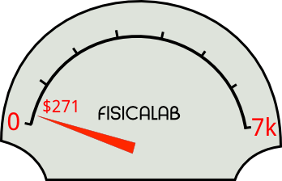

¡Ayuda a FisicaLab!
|
Colabora con FísicaLab para una Educación Libre Ayudanos a recaudar $ 7k para el 31 de Marzo |
 |
Para artículos relacionados con esta campaña ver GNUtopics.
GNU FísicaLab es una aplicación educativa para el aprendizaje de la física. Permitiéndole al estudiante enfocarse en los conceptos de la física cuando resuelve un problema, dejando de la lado los detalles matemáticos. Actualmente, FísicaLab puede resolver problemas de cinemática de partículas, estática de partículas y cuerpos rígidos, dinámica de partículas (todo esto en dos dimensiones) y algunos problemas de calorimetría. El uso intuitivo de FísicaLab y su extensa documentación, con una gran cantidad de ejemplos, permite que el estudiante se familiarice rápidamente con la aplicación. Sin embargo, el proyecto necesita tu ayuda para agregar mas características. La próxima versión esta planeada para incluir módulos para mecánica de fluidos y termodinámica (ciclos de potencia), así como capacidades para Leer/Guardar problemas, filtrado de factores en el menú contextual y muchas otras.
Software Libre para la educación
El software libre es importante en la educación, para no encadenar a los estudiantes en el uso de paquetes de software privativos. Usando software libre los centros educativos ahorran dinero. Pero, más importante aun, el software libre brinda a los usuarios la libertad de controlar sus propias computadoras. Además de animarlos a aprender y compartir. Ya que pueden realizar copias para llevar a casa y compartir con sus amigos. Lea ¿Por qué las escuelas deben usar exclusivamente software libre?.
Con su ayuda podremos ampliar el abanico de problemas a resolver con FísicaLab, agregar nuevas características, ofrecer FísicaLab en otros idiomas y en muchas otras cosas. Ayude a FísicaLab a recaudar $ 7k al 31 de Marzo, y dele a los estudiantes la oportunidad de recibir una educación ética con software libre.
¿Por qué PayPal?
Viviendo en Guatemala no tengo muchas opciones con las plataformas de crowdfunding. Algunas no me permiten participar, y otras imponen cargos adicionales para quienes no viven en ciertos países. De cualquier forma, al final, todas estas plataformas requieren PayPal para transferir el dinero. Aunque PayPal no ofrece la posibilidad de transferir el dinero a Guatemala, y debo utilizar un servicio adicional para ello.